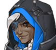
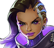
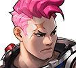
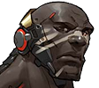
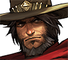
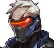
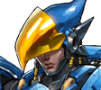
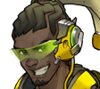
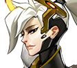
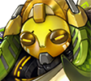

What is this?
Overwatch is a video game developed and distributed by blizzard. Although it features many different gamemodes and playstyles the overall genre is a first-person shooter (FPS). Although people will immediately associate any first-person shooter with the Call of Duty franchise, Overwatch is a very different game. This guide is provided for players to learn the fundementals of the game without the painful initial period of "What is happening?". It will provide many tips and tricks to improve your performance and overall enjoyment of the game.
Who am I?
My in game name is Cyber and I have played overwatch since it was released on PC. I have not put a million and one hours into the game and my competitive rank is diamond. Personally I know the stuggle of not fully understanding the game before diving into competitive and getting super frustrated. If this happens be sure to come back here for some tips on what might not be working.
Heroes
Ana
Ana, full name Ana Amari, is an Egyptian sniper and bounty hunter, and one of the founding members of Overwatch. She wields a Biotic Rifle loaded with smart darts that damage enemies and heal allies, as well as a sidearm that fires Sleep Darts. She also carries Biotic Grenades that disable enemy healing and boost ally healing. Her ultimate ability is Nano Boost, which grants an attack and defense boost to a teammate hero.
Countered by
Bastion
Bastion is a combat robot-turned-explorer. It can Reconfigure between a mobile form outfitted with a submachine gun (Configuration: Recon) and a stationary form equipped with a Gatling gun (Configuration: Sentry). It also has the ability to Self-Repair and quickly regain lost health, and its Ironclad passive reduces damage taken. Its ultimate ability is Configuration: Tank, which allows it to roll on treads and fire explosive rounds from a smooth-bore cannon for a short period of time.
Countered by
Dva
D.Va, real name Hana Song, is a South Korean mecha pilot and former pro gamer from Busan. She pilots a combat mecha armed with twin Fusion Cannons, shotgun-like weapons that require no ammunition or reload time. Her mecha is equipped with rocket Boosters for short bursts of flight, as well as a Defense Matrix that allows it to shoot enemy projectiles out of the air. She can also fire a volley of Micro-Missiles that do splash damage on impact. D.Va's ultimate ability, Self-Destruct, overloads and detonates her mecha, dealing massive damage to all enemies in a huge radius within line of sight. If her mech is destroyed (either by her ultimate or in combat), she ejects and continues to fight on foot, armed with a mid-range Light Gun, until her mecha can be summoned again.
Countered by
 Doomfist
Doomfist is both the name of the titular cybernetic gauntlet and the title of its wielder, who is currently the Nigerian-born Akande Ogundimu, businessman and mixed martial artist turned mercenary. He has a short-range Hand Cannon on his off-hand that fires shotgun-like bursts and regenerates ammo over time, but most of his abilities come through melee attacks from the Doomfist Gauntlet. Doomfist can charge up a Rocket Punch that lets him lunge forward and punch an opponent backwards, a Seismic Slam that launches enemies in its range a short distance towards Doomfist, and a Rising Uppercut that greatly launches a single enemy while doing damage. Each ability that successfully hits also generates personal shielding for Doomfist (The Best Defense...). Doomfist's ultimate ability is named Meteor Strike, allowing him to jump into the air and slam the ground, damaging all enemies in a range around that point and pushing them back a short distance.
Countered by
 Genji
Genji, full name Genji Shimada, is a Japanese cyborg ninja. His main attack method is to throw three Shurikens, either in quick succession or simultaneously in a horizontal spread. His abilities are Swift Strike, a quick dashing lunge with good range, and Deflect, a defensive stance that briefly ricochets projectiles back at enemies with his wakizashi. His Cyber-Agility allows him to double-jump and run up walls. Genji's ultimate ability is Dragonblade, which temporarily replaces his shurikens with powerful, sweeping melee attacks dealt by his katana.
Countered by
Hanzo
Hanzo, full name Hanzo Shimada, is a Japanese archer, assassin and mercenary. He wields the Storm Bow and is equipped with specialized arrows, including Sonic Arrows to detect enemies and Scatter Arrows to hit multiple targets with ricochets. He is also able to Wall Climb, enabling him to reach vantage points. His ultimate ability is Dragonstrike, in which he unleashes a spiraling spirit dragon that can travel through obstacles to deal damage in a straight line.
Countered by
Junkrat
Junkrat, real name Jamison Fawkes, is an Australian scavenger, mercenary and anarchist. He carries a Frag Launcher that fires grenades and employs Steel Traps and remote-detonated Concussion Mines; when he is killed, several primed grenades are released from his body in a final attempt to get back at the attacker (Total Mayhem). Junkrat's ultimate ability is RIP-Tire, a self-propelled truck wheel loaded with explosives that he's able to manually steer and detonate.
Countered by
Lucio
Lúcio, full name Lúcio Correia dos Santos, is a Brazilian DJ and freedom fighter. He is equipped with futuristic roller blades that allow him to skate on walls (Wall Ride), and is armed with a Sonic Amplifier gun that can damage enemies or knock them back with Soundwaves. He uses music to either heal his teammates or increase their movement speed (Crossfade), and can amplify his music at will to boost the effects (Amp It Up). His ultimate ability, Sound Barrier, grants powerful temporary shielding to himself and nearby allies. Jeff Kaplan described Lucio's origins based on the bard class from classic tabletop role-playing games, able to cast auras on their party.
Countered by
Mccree
McCree, full name Jesse McCree, is an American bounty hunter and vigilante with a cybernetic arm and a Wild West motif. He carries his Peacekeeper six-shooter, with its primary fire that can shoot single shots with high accuracy at moderate range, and its alternate fire allowing him to Fan the Hammer to quickly unload the entire cylinder at close range in rapid fire with some loss of accuracy. He can quickly dodge attacks using his Combat Roll ability which also instantly reloads his revolver, and can throw a Flashbang grenade a short distance which stuns enemies and interrupts their abilities. McCree's ultimate ability is Deadeye, which allows him to line up headshots on every enemy in his sight, with resulting damage proportional to the time spent aiming.
Countered by
Mei
Mei, full name Mei-Ling Zhou (周美灵), is a Chinese climatologist and adventurer from Xi'an. She wields an Endothermic Blaster that can either freeze enemies in place with a short-range spray or shoot a long-range icicle projectile. She has the ability to Cryo-Freeze herself in a solid ice block to shield herself from damage and heal injuries, as well as the ability to erect Ice Walls with many versatile uses, primarily for blocking the enemies. Her ultimate ability is Blizzard, which calls down Snowball, her personal weather modification drone, to freeze all enemies in a wide radius.
Countered by
Mercy
Mercy, real name Angela Ziegler, is a Swiss field medic and first responder. She wears a winged Valkyrie suit, which allows her to rush towards targeted teammates through the air (Guardian Angel), as well as slow her own descent while falling (Angelic Descent). She wields a Caduceus Staff that alternately heals her teammates or boosts their damage output, and also carries a medium-range Caduceus Blaster as a sidearm. Her Resurrect ability allows her to revive one fallen ally. Her ultimate ability is Valkyrie, which boosts her healing and attack boosts, firing rate, Resurrect cooldown, and gives her infinite ammunition for a brief period.
Countered by
Orisa
Orisa is a one-month-old, four-legged female Omnic built by 11-year-old robotics prodigy Efi Oladele, to be a "mechanical peacekeeper" of Numbani. Her primary weapon is the Fusion Driver, a long-range projectile-based machine gun; its alternate fire mode, Halt!, releases a slow-moving projectile that the player can detonate to draw in nearby enemies towards the point of detonation, similar to Zarya's Graviton Surge. She can launch a deployable Protective Barrier similar to Reinhardt's shield which can be used for strategic defenses, and can Fortify her structure to temporarily prevent all forms of crowd control against her, such as Lúcio's sonic blasts or Reinhardt's Earthshatter abilities. Her ultimate ability is Supercharger, a deployable device which gives Orisa and her teammates, provided they are in line-of-sight, an attack boost similar to that of Mercy, though the Supercharger itself can be destroyed by enemy fire and deactivates after a few seconds.
Countered by
Pharah
Pharah, real name Fareeha Amari, is an Egyptian security officer. She wears the Raptora Mark VI, a jetpack-equipped combat suit, and wields a Rocket Launcher as her primary weapon. She has a Wedjat (Eye of Horus) tattoo around her right eye. Her abilities are Concussive Blast, a rocket with powerful knockback but no damage, and Jump Jets, a quick jetpack-assisted vertical ascension comparable to a rocket jump. Her passive ability allows her to Hover in the air, which is paired well with her Jump Jets ability. Pharah's ultimate ability is Barrage, where she fires a continuous stream of small air-to-ground rockets at targets, while she is frozen still in place.
Countered by
Reaper
Reaper, real name Gabriel Reyes, is an American mercenary and terrorist, originally a founding member of Overwatch, now a leading member of Talon. He is attired in a black hooded trenchcoat with a white skull mask and wields twin Hellfire Shotguns. His abilities are Shadow Step, a medium-range line of sight teleport, and Wraith Form, a brief period of invincibility and speed increase. He was able to heal himself by consuming the souls of fallen enemies, visible as red burning "Soul Globes" on the ground but later was changed to a passive ability called The Reaping which allows him to steal a 20% heal from the damage he deals. Reaper's ultimate ability is Death Blossom, a twin shotgun gun kata which deals massive damage in a short radius around him.
Countered by
Reinhardt
Reinhardt, full name Reinhardt Wilhelm, is a German soldier and adventurer, and one of the founding members of Overwatch. He wears a heavy suit of Crusader power armor, and carries a rocket-powered war hammer (Rocket Hammer) as his primary weapon. His main ability is a wide hard-light Barrier Field mounted on his arm that allows him to protect himself and teammates behind him from enemy fire. He may also launch a flaming projectile that ignores enemy barriers (Fire Strike), or use a rocket booster to Charge into the enemy lines, crushing them against walls. His ultimate ability, Earthshatter, makes him slam his hammer against the ground, sending out a shockwave that incapacitates enemies in front of him.
Countered by
Roadhog
Roadhog, real name Mako Rutledge, is Junkrat's enforcer and bodyguard of unknown nationality. He wields a Scrap Gun that fires shrapnel in a mid-range automatic firing mode, or a short-range shotgun-like single shot. He also carries a NOS canister filled with "Hogdrogen" to self-heal (Take a Breather), and employs a Chain Hook to pull distant opponents towards him. His ultimate ability, Whole Hog, allows him to put a top loader into his scrap gun, firing it in full auto mode with increased knockback, wider spread, and no need to reload.
Countered by
Soldier: 76
Soldier: 76, real name Jack Morrison, is an American soldier-turned-vigilante and a founding member of Overwatch. He wears a facemask with a visor and carries an experimental Heavy Pulse Rifle equipped with an underbarrel launcher that fires three Helix Rockets. His abilities are Sprint, a forward run with no duration limit or cooldown, and Biotic Field, a deployable device which regenerates the health of allies in the immediate vicinity. His ultimate ability, Tactical Visor, makes his rifle automatically track enemies in his line of sight for a brief period, similar to an aimbot.
Countered by
Sombra
Sombra, real name Olivia Colomar, is a Mexican hacker and infiltrator. She is equipped with a low-damage, high-capacity Machine Pistol for short range combat. Her trademark ability allows her to Hack enemies, turrets or neutral health kits. Hacked enemies cannot use their abilities, hacked turrets are disabled, and hacked health kits respawn faster and become unusable to the enemy team. Sombra also has Thermoptic Camo that gives her a period of invisibility paired with a speed boost, and can throw down a Translocator beacon that she can to teleport to later. Her passive ability, Opportunist, enables her to track enemies that are low on health, even through walls. Sombra's ultimate ability is EMP, an electromagnetic shockwave that hacks all enemies around her, as well as disabling their barriers and shields and displaying if they have fully charged ultimates.
Countered by
Symmetra
Symmetra, real name Satya Vaswani, is an Indian architect. She wields a Photon Projector that can either lock a continuous beam of energy onto enemies in a short range, or charge and launch a slow-moving ball of energy in a straight line. She is able to create multiple small Sentry Turrets on walls and ceilings, and can launch a slow-moving elliptical Photon Barrier to defend her teammates. Symmetra is the only character with two ultimate abilities: Teleporter, which creates a persisting warp tunnel leading from the team's spawn point to the deployed location, and Shield Generator, which constructs an energy node providing all teammates in range with additional shielding.
Countered by
Torbjorn
Torbjörn, full name Torbjörn Lindholm, is a dwarfish Swedish engineer and weapons designer, and a founding member of Overwatch. His armor comes equipped with a mobile forge, and he carries a Rivet Gun that shoots molten slag and a Forge Hammer for construction and melee attacks. He can Build Turrets that auto-target enemies and can be upgraded, and provide Armor Packs to his teammates to give a boost to their health, which are constructed from scrap he finds on the battlefield (Scrap Collector). His ultimate ability is Molten Core, which overheats his personal forge, upgrading his turret, granting a speed bonus to turret construction and repair, as well as a defense and rate-of-fire bonus to himself and his turret.
Countered by
Tracer
Tracer, real name Lena Oxton, is a British pilot and adventurer. She wields dual rapid-fire Pulse Pistols, and is equipped with a "chronal accelerator" which grants her the ability to either jump forward in time, crossing many meters in a split second (Blink) or rewind three seconds into the past to heal and restore ammunition (Recall). Her ultimate ability is Pulse Bomb, an explosive charge that sticks to enemies, exploding after a brief delay for massive damage.
Countered by
Widowmaker
Widowmaker, real name Amélie Lacroix, is a French sniper and assassin. She wields the Widow's Kiss, a versatile rifle that fires in full automatic at close-range, and can convert into a sniper rifle for long-range kills. She also uses a Grappling Hook to reach high ledges and Venom Mines to disable enemies. Her ultimate ability is Infra-Sight, which activates her recon visor to highlight all enemies through walls for her and her team, similar to a wallhack.
Countered by
Winston
Winston is a genetically engineered gorilla, scientist and adventurer. He wields a short-range Tesla Cannon that requires no aiming and electrocutes enemies at close range, and wears armor that incorporates a Jump Pack, allowing him to make leaps across great distances and damage foes on landing. He can also deploy a Barrier Projector that provides a temporary spherical shield to protect himself and teammates from enemy fire. Winston's ultimate ability is Primal Rage, in which he briefly gives in to "the beast within" to get massively increased health and powerful melee attacks with knockback, although he foregoes his primary weapon.
Countered by
Zarya
Zarya, full name Aleksandra Zaryanova, is a Russian powerlifter and soldier. She is armed with a Particle Cannon that can either emit a continuous beam of energy or launch an energy projectile in an arc. She is also able to project a personal Particle Barrier onto herself or onto one of her teammates (Projected Barrier), and soaking up damage with these shields raises the power of her own attacks proportionally. Zarya's ultimate ability, Graviton Surge, forms a gravity well that pulls enemies in and damages them, leaving them open to other attacks.
Countered by
Zenyatta
Zenyatta, full name Tekhartha Zenyatta, is an omnic monk and wanderer. Rather than moving on foot, he floats above the ground in a meditative pose. He is surrounded by a circle of floating metal orbs named the Orbs of Destruction (resembling prayer beads), which he can use to launch a form of energy to damage foes, either one at a time or through a charged-shot. He can also cast these orbs onto teammates as Orbs of Harmony to regenerate health, or onto enemies as Orbs of Discord that lower their defenses. His ultimate ability is Transcendence, which makes him temporarily invulnerable and applies massive regenerative effects to his allies in a large radius around him.